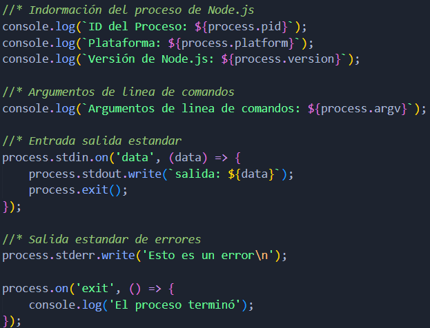
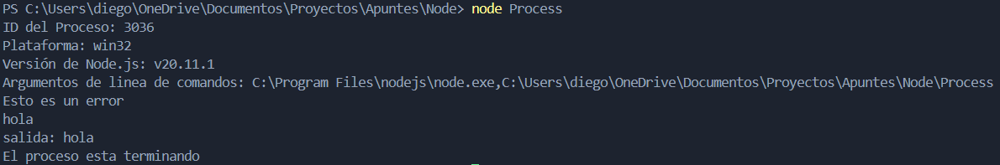

Process
En Node.js, el objeto process es un objeto global que se utiliza para interactuar con el sistema operativo y el entorno de ejecución. Proporciona una gran cantidad de información y control sobre la ejecución de un programa en Node.js, incluyendo la manipulación de variables de entorno, la gestión de la entrada/salida estándar, y el manejo de eventos del proceso.
Al ser un objeto global no necesita ser importado ni requerido.
Funcionalidades:
- Acceso a Variables de Entorno:
- process.env es un objeto que contiene las variables del entorno en el que se está ejecutando el proceso de Node.js. Es común usarlo para acceder a configuraciones que pueden variar entre entornos (desarrollo, producción, etc.).
- información del proceso:
- process.pid es un número que representa el identificador de proceso Node.js; process.platform es una cadena que representa el sistema operativo en el que se está ejecutando el proceso de Node.js (por ejemplo, 'win32', 'linux', 'darwin'); Y procces.version devuelve la versión del Node.js que se está utilizando.
- Argumentos de Línea de Comandos:
- process.argv es un array que contiene los argumentos de la línea de comandos con los que se ha ejecutado el proceso de Node.js. El primer elemento es el ejecutable de Node.js, el segundo elemento es el archivo JavaScript que se está ejecutando, y los elementos restantes son los argumentos pasados al script.
- Entrada/Salida Estándar:
- process.stdin, process.stdout y process.stderr son streams que representan la entrada estándar, la salida estándar y la salida de errores del proceso de Node.js, respectivamente.
- Manejo de Eventos:
- process.on() se utiliza para registrar manejadores de eventos para eventos específicos del proceso de Node.js, como 'exit', 'uncaughtException', 'warning', y 'beforeExit'.
- Manejo de Señales del Sistema:
- process.on() tambien se utiliza para registrar manejadores de eventos para las señales del sistema, como SIGINT (generada por la combinación de teclas Ctrl+C) y SIGTERM (generada por el comando kill).
- Finalización del Proceso:
- process.exit() se utiliza para finalizar el proceso de Node.js con un código de salida específico. Por defecto, el código de salida es 0, lo que indica que el proceso se ha completado correctamente, mientras que un código diferente de 0 indica un error.
Ejemplo:

